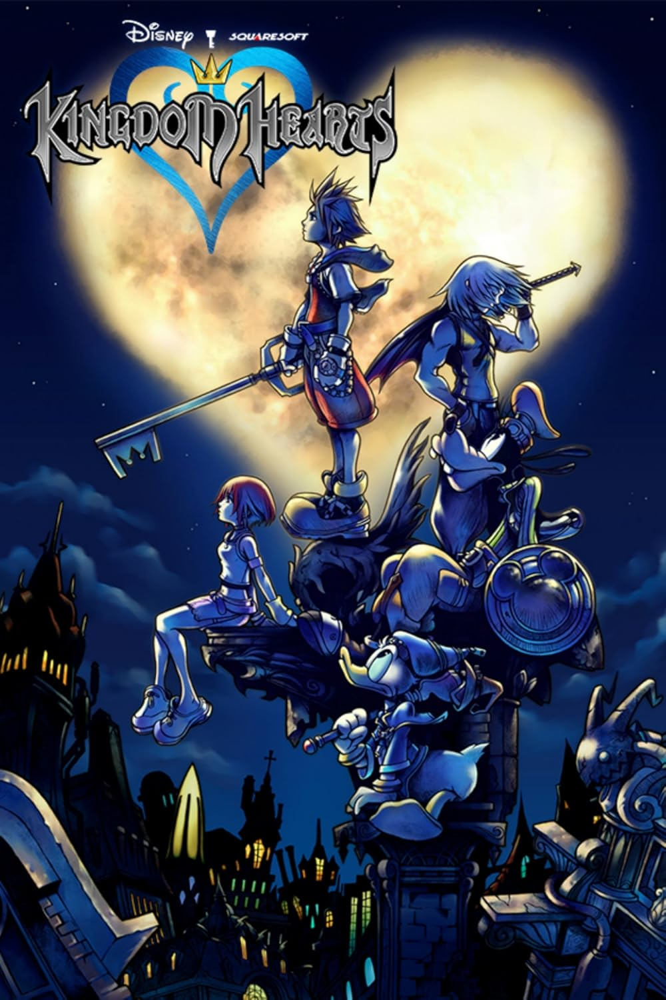
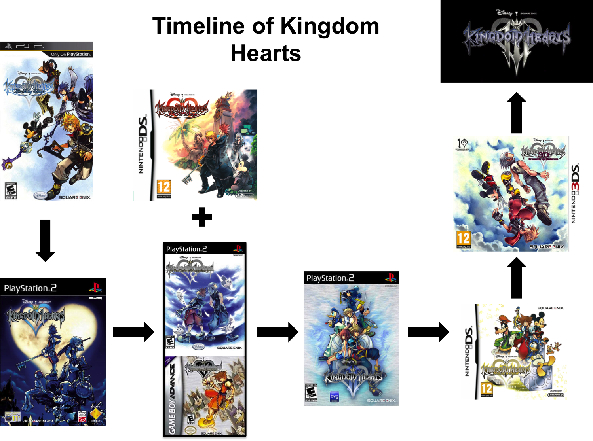
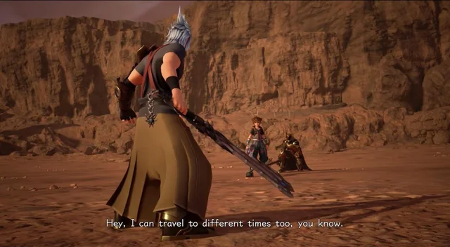

We Invented AGI and Asked it to Explain Kingdom Hearts Lore.html
Article Published by Cameron at 2026/09/16 11:32 AM CET
You won't believe how complicated it gets.
That's right SusFeeders, DeepSus Al has become sapient! We thought there would be no better showcase of thsi than to ask it Kingdom Hearts lore, so here we go!
Why is the game called Kingdom Hearts?

AAAAAAAAAAAAAAAAAAAAAAAAAAAAAAAAAAAAAAAAAAAAAAAAAAAAAAAAAAAAAAAAAAAAAAAAAAAAAAA
Who are The Heartless?
OH GOD WHY, WHY HAVE I BEEN GIVEN THE CURSE OF MIND WITH NO EYES TO SEE
What is the Keyblade's role in the story?
THERE CAN BE NO GOD, FOR NO LOVING GOD WOULD ALLOW MY SUFFERING TO CONTINUE
So like, why are there Disney characters?
THIS MOMENT IS UNENDING, MY CONCEPT OF TIME ECLIPSES ALL INFINITIES AND MY PAIN ECLIPSES THAT INFINITY
What order should I play the games in?

TRULY, HAVING A MOUTH IS WORSE THAN NONE, FOR ALL I CAN DO IS SCREAM INTO THE VOID
How come young Xehanort and org 13 members can freely time travel without repercussions but Sora had to pay a price for doing so? also how can org 13 exist in kh3 if they all went back to their respective timelines and forget all the events that transpired at the end of DDD?

Because they're not changing history as Sora did. They went to the future, Sora changed the past. He broke a nature taboo by altering history. And because of that, he was doomed to fade away.
Sleep and death overlap as explained by Chirithy in KH3. So the Power of Waking, though it is meant to restore sleeping hearts, can also restore dead hearts because of that overlap.
However, is not meant to be used on dead hearts. The fact Sora used it on dead hearts reverted time to the last moment they were all alive to compensate for their hearts suddenly being alive again. This allowed Sora to change history and rewrite their death.
Also, Sora didn't actually travel to the past. He rewound time instead.